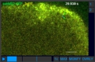
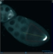
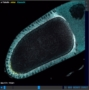
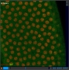
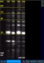
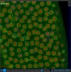
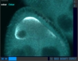

Click on the images or the titles to view an example video/image series!
If you have a compatible .zip file which you'd like to analyze, click here!
You may also download the example .zip files and open them with OverLAY using the local protocol.
Please note that during playback random jumping of the frames may occur. This is a known bug of unknown source. If it happens, click on the progress bar, it - misteriously - resolves this issue!
Click on the images or the titles to view an example video/image series!
If you have a compatible .zip file which you'd like to analyze, click here!
You may also download the example .zip files and open them with OverLAY using the local protocol.
Please note that during playback random jumping of the frames may occur. This is a known bug of unknown source. If it happens, click on the progress bar, it - misteriously - resolves this issue!
|  | Two-channel video with path overlays Drosophila oocyte expressing oskar-MS2(10x)-GFP injected with a mixture of LNA mixmer FIT probes targeting oskar mRNA From Hövelmann and Gaspar et al., Ang. Chemie, 2014 | Download |
|  | Two-channel image series with polygon and line overlays Drosophila oocytes during stages 8-10 of oogenesis. oskar mRNA and Oskar protein are labeled, outline and anteroposterior axis of the oocytes is shown in the overlay From Gaspar and Yu, JCB, 2014 | Download |
|  | Three channel z-stack Fixed Drosophila oocyte stained for alpha-tubulin, Oskar and Klarsicht proteins From Gaspar and Yu, JCB, 2014 | Download |
|  | Two-channel video Nuclear divisions in a syntitial blastoderm stage Drosophila embryo previously unpublished | Download |
|  | Two-channel single slice image Western blot developed by anti-Oskar antibody Two different exposures + annotation previously unpublished | Download |
|  | Two-channel video with massive amount of path and polygon overlays Note, that this puts extra weight onto your computer, loading and computational times are increased, sometimes rendering the player completely unresponsive | Download |
|  | Two-channel image series of different sized images |